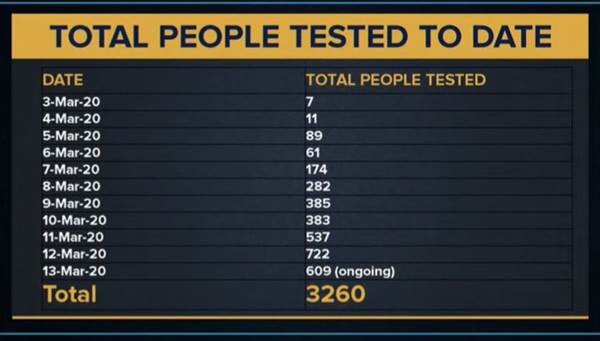
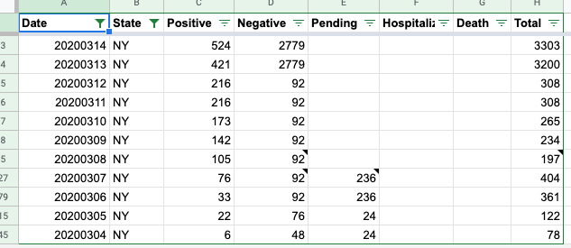

NY: Adding historical testing data from 3/3-3/12
Issue number 26
Jordan-Zino opened this issue on March 20, 2020 at 9:25 am
Labels Data quality stale
I pulled historical total tests for NY from Gov. Cuomo’s press conference on 3/13. Data starts from 3/3 and is complete through 3/12 and partial for 3/13. We can use it to backfill historical tests for NY from 3/3 by adding each day’s total tests to the previous. Now that users of the site can see historical data at the state level, I thought this would be useful to see NY’s trend and the % testing positive. The #reporterwatch tab on Slack suggest I open an issue here. Picture attached and link to press conference below. Thanks!

6:00 mark at below 3/13 press conference https://www.youtube.com/watch?v=oN6H4J32fz4.
Great thanks!
I looked at our historical for NY and we have something completely different - I will need to dig further. 
I wasn’t helping track back in those early days so I don’t know how/what NY was reporting. But to my knowledge, that screenshot I sent was the first time they gave solid retrospective testing data, so I imagine it would be different from whatever they disclosed piecemeal before perhaps? Thanks for taking a look.
Jordan
On Fri, Mar 27, 2020 at 12:10 AM Elliott Klug notifications@github.com wrote:
I looked at our historical for NY and we have something completely different - I will need to dig further. [image: Screen Shot 2020-03-27 at 12 09 31 AM] <…/assets/images/github/43073915/77720777-45e08480-6fbf-11ea-8714-38533d065acd.png>
— You are receiving this because you authored the thread. Reply to this email directly, view it on GitHub https://github.com/COVID19Tracking/issues/issues/26#issuecomment-604804620, or unsubscribe https://github.com/notifications/unsubscribe-auth/AO4L2TURK2ENI5Y3KZYDYDDRJQRJZANCNFSM4LQPVNTA .
This issue has been automatically marked as stale because it has not had recent activity. It will be closed if no further activity occurs. Thank you for your contributions!
This issue has been automatically marked as stale because it has not had recent activity. It will be closed if no further activity occurs. Thank you for your contributions!
This issue has been closed because it was stale for 15 days, and there was no further activity on it for 10 days. You can feel free to re-open it if the issue is important, and label it as “not stale.”
Thank you - will get to this later today